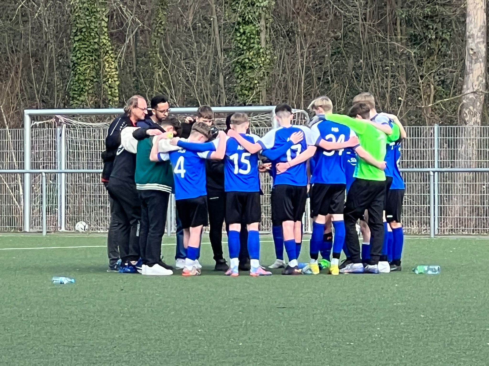

SGM-ABI B1 : SGM Dürrenzimmern Unteres Zabergäu 5:3 (2:1)
 Sonntagmorgen Beilstein schönstes Fußballwetter, und die F Jugend kickte bereits auf dem Rasen. Aufgrund von Krankheiten, Verletzung ergab es sich das wir unser erstes Spiel in der Leistungsstaffel mit nur 11 Spielern angehen konnten. Da waren wir alle froh, dass das Team so gut in der Vorbereitung mitgezogen hat und somit die Fitness bei allen präsent war. Die ersten 20 Minuten gehörten klar unserem Team das sich gut ins Spiel brachte und in der 14 Min das 1:0 durch Benni auf Vorlage von Felix erzielte. Und in der 16 Min das 2:0 durch Kay. Aber irgendwie kam dann ein wenig der Schlendrian ins Spiel und einige Bälle gingen im Mittelfeld verloren, so dass in der 28 min das 2:1 fiel. Mit diesem Stand ging es auch in die Halbzeit. Der Gegner startet besser in die 2.Halbzeit und ein Freistoß führte, von der Mitte vor dem 16m Raum, zum 2:2. Und in der 68min gar das 2:3 hier ging der Ball von Links quer durch unsere Reihen durch und konnte vom rechten 5m Eck verwertet werden. Eine taktische Positionswechsel folgten darauf, und endlich gelang uns mehr Zugriff im Mittelfeld aber auch beide Flügel wurden effektiver. So gelang Kay in der 78 Min das hochverdiente 3:3, und die Jungs wollten noch mehr in der 80 Min das 4:3(Fabian) und in der letzten Minuten der Nachspiel Zeit gar noch das 5:3 (Julius). Fazit die Ersten 20 Min sehr gut gespielt die letzten 10 Minuten geackert und gekämpft und das Ding gedreht. Für die Nerven war es ein anstrengender Tag, natürlich auch für die Physis da alle durchspielen mussten. Es spielten: Benni, Kay, Felix, Juan, Florin, Florian, Peter, Jonas, Paul, Juan, Julius, an der Seite Georg, Kaan, Wolfgang